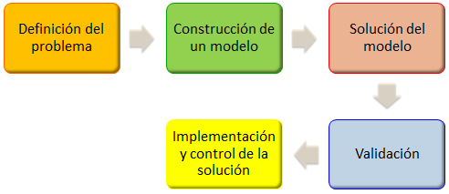

Investigación de Operaciones I
INTRODUCCION:
El objetivo del curso es que el estudiante aprenda a reconocer los problemas tipo de la Investigación de Operaciones de modo que sepa a qué técnico recurrir en cada caso, para un adecuado estudio y solución del mismo. Como su nombre lo indica, la Investigación de Operaciones (IO), o Investigación Operativa, es la investigación de las operaciones a realizar para el logro óptimo de los objetivos de un sistema o la mejora del mismo. Esta disciplina brinda y utiliza la metodología científica en la búsqueda de soluciones óptimas, como apoyo en los procesos de decisión, en cuanto a lo que se refiere a la toma de decisiones óptimas y en sistemas que se originan en la vida real.
Actualmente IO se aplica al sector privado y público, a la industria, los sistemas de comercialización, financieros, de transportes, de salud etc., en los países desarrollados, “en vías de” y en los del tercer mundo.
La Investigación Operativa es la aplicación del método científico por equipos interdisciplinarios a problemas que comprenden el control y gestión de sistemas organizados (hombre- máquina); con el objetivo de encontrar soluciones que sirvan mejor a los propósitos del sistema (u organización) como un todo, enmarcados en procesos de toma de decisiones.
INVESTIGACION DE OPERACIONES

Primera Practica Calificada:
Ver Video